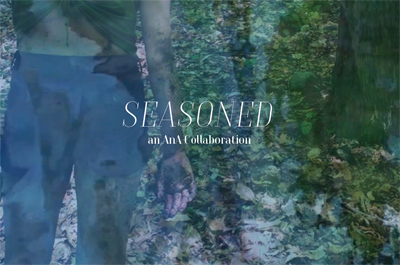

past performance |
|||
| 
Seasoned: World Premiere showtimes & tickets:July 29 @ 3pm & 8pm Seasoned is a film told through movement and the passage of time. As one woman navigates shifting relationships and seasons, glimpses of intimate moments remind us of the history we carry with us as we connect to each other, break apart, and try again. Artistic Directors of AnA Collaborations: Alex Jenkins and Audrey Rachelle Learn more: |
upcoming performances |
|||
 |
|||
| EVQ Film Festival 2018 August 20-25 |
|||
performance archives |
|||
| 2018 | 2017 | 2016 | 2015 |
| 2014 | 2013 | 2012 | 2011 |
| 2010 | 2009 | 2008 | 2007 |